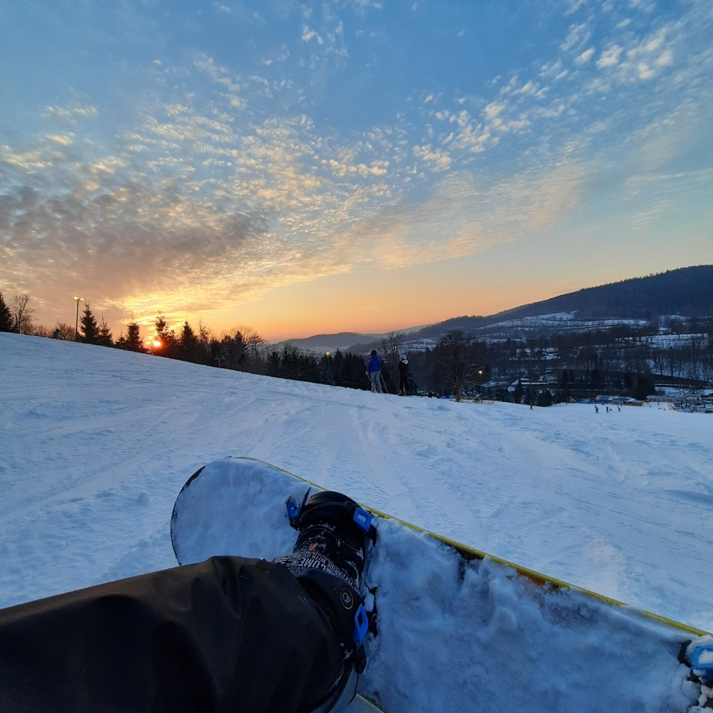
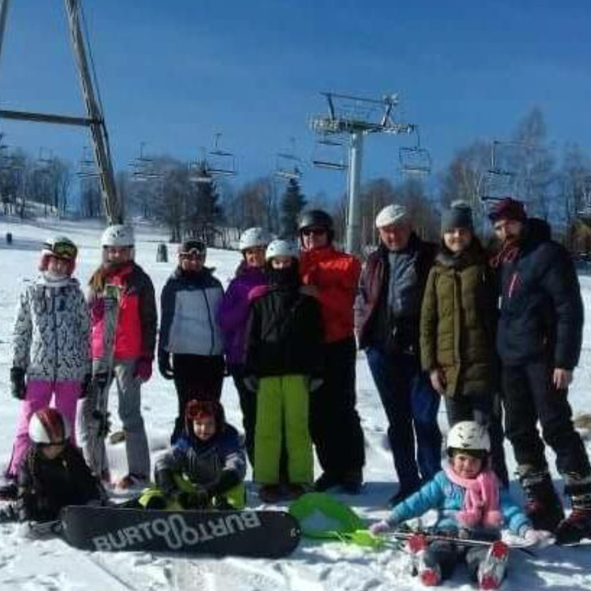
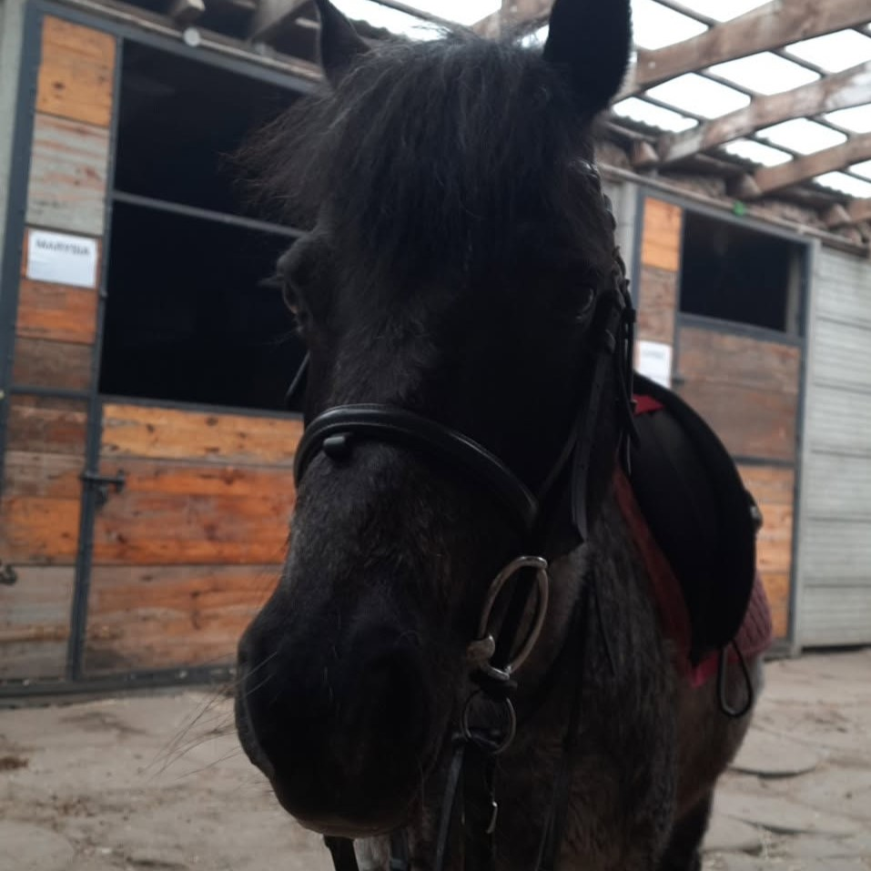
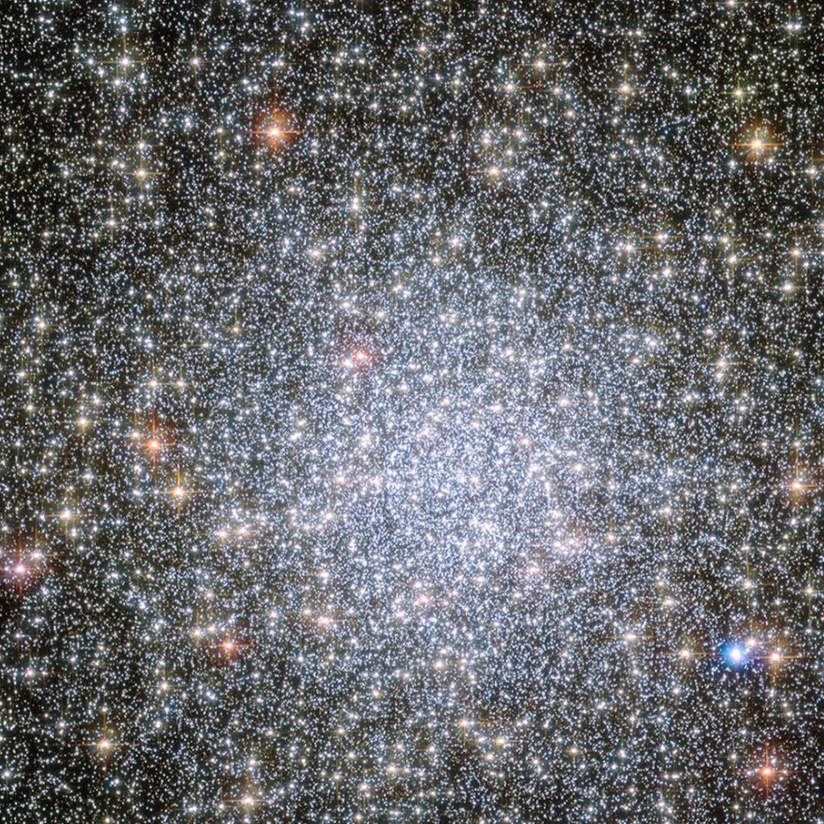
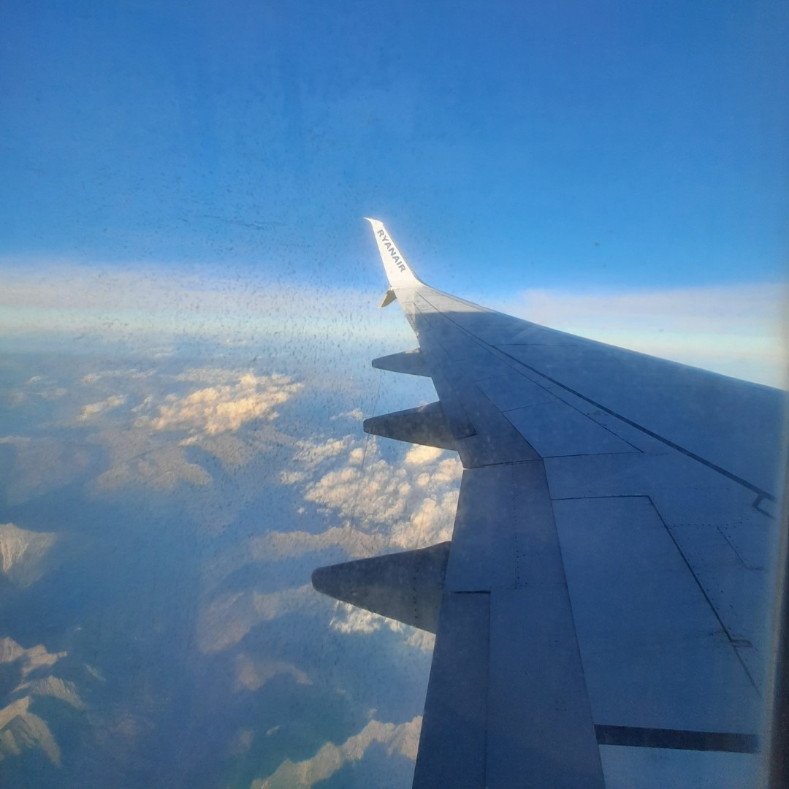
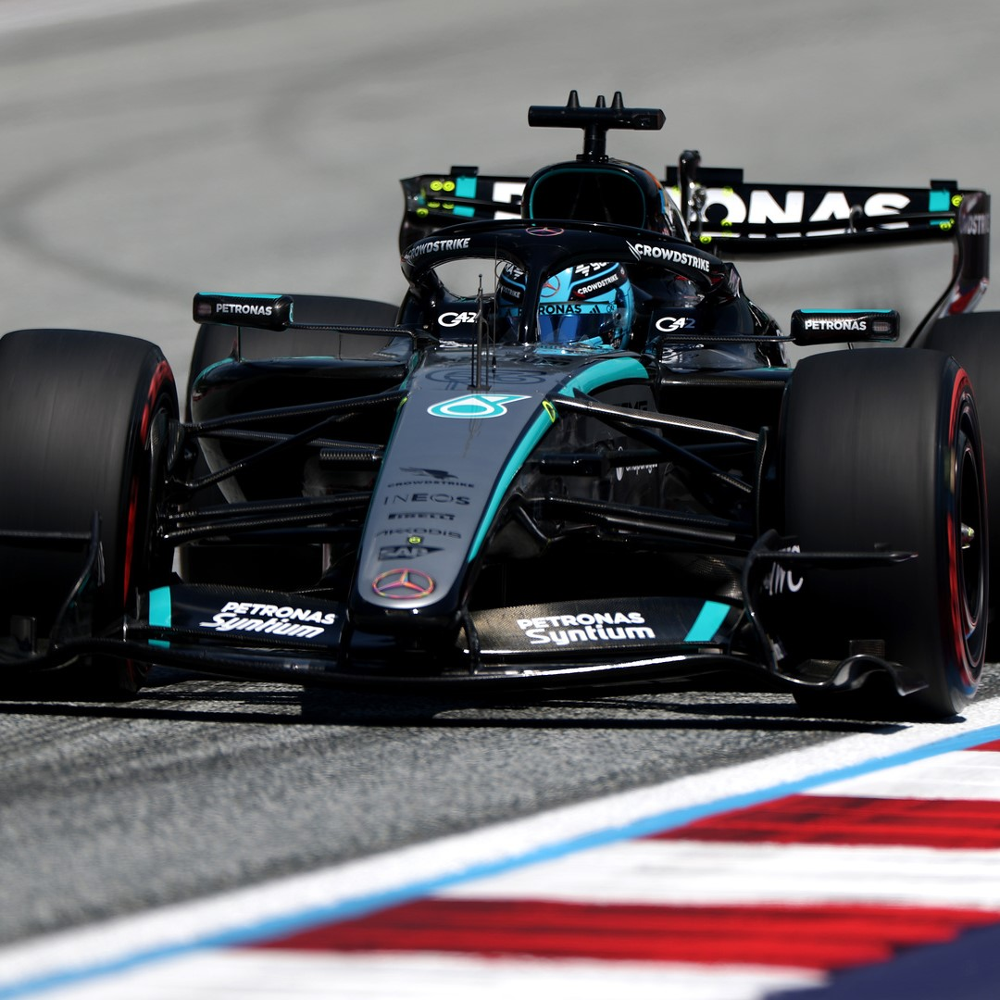
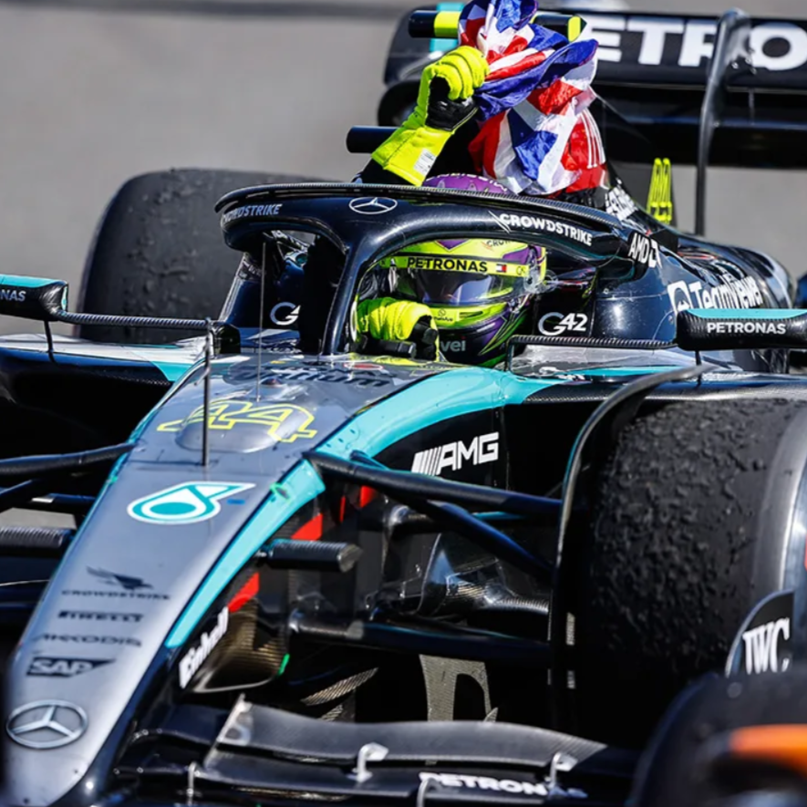
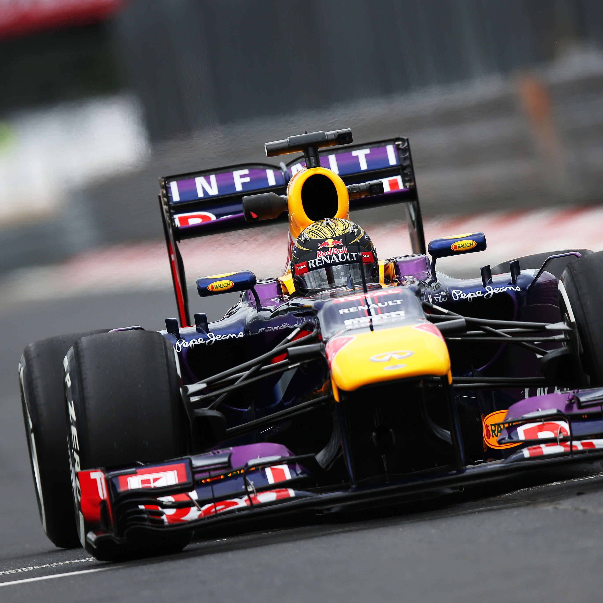

Hi! I'm aspiring to be an aerospace engineer but also a pilot and also an astronomer.
I would like to live above the clouds and explore the universe!
Here are few things about me:
Stardance coding projects:
My most developed project: SpacecraftOS
My first project: ISS HUNT
My newest project: Personal Cloudly Site,
wait, you are on it!
Zooniverse translating projects:
I had an amazing opportunity to translate 2 NASA projects on zooniverse to polish!
1. Shock Detectives
2. Space Umbrella
Zooniverse is a platform where citizen-scientists help real scientists with their research.
I really recommend it! You can find it here: Zooniverse!
Pssst! If you also want to translate projects to your language, just message the sciencists, I'm sure that
they will be happy to have your help!
Fav drivers: Lewis Hamilton and George Russell
Fav team: Mercedes (and recently Ferrari but just because of Hamilton)
Fav circuit: Spa-Francorchamps
I started watching F1 in 2024 (since Belgium GP where Hamilton won and then got
disqualified and Russell won instead, I think I may know why are they my fav drivers)
Because I'm from Poland I just NEED to mention ROBERT KUBICA!!
Robert was (is) really talented driver. He won in 2008 Canadian GP in BMW Sauber. He almost drove for
ferrari but in 2011 horrendous accident had happend during the Ronde di Andora rally, in which
he nearly lost his right arm. But Robet is the GOOOAT and then in 2025 he won the LeMans 24h race in Ferrari!
I also want to mention Sebastian Vettel - F1 4 times world champion. Unfortunately I did not have an occasion
to watch him race but he is definitely my favourite retired driver. He is so inspiring and since retiring,
he has been engaging in environmental protection!
I really loved astronomy when I was a kid, and at the end of 2025, I returned to this passion!
In the meantime, I also grew to love aviation. I always loved flying, and I found the airport part the
best part of any trip! I decided to combine these two passions and become an aerospace engineer!
Do you see the plane flying around this site? I'm sitting in the cockpit 😋🛫🪐
Equestrian
I started riding horses nearly 10 years ago! This passion developed through my cousins, who also had been riding horses.
My childhood bestfriend also was obsessed with horses! We used to play
Star Stable Online everyday! Now, I'm kinda experienced
rider; I've earned two equestrian badges, and my personal best jump is 115cm on Czako-Blue, my favorite stable pony.
Skiing
When I was younger I used to go on ski trips with my whole family. It was so fun! For the past 3 years I go skiing
every winter but just with my dad and sister. It's also really fun tho!
Snowboarding
Durning this winter holidays (2026) Me and my family decided to try snowboarding.
On the last day, we rented snowboards and took a one-hour lesson. We didn't give up after the lesson,
though, and managed to learn a lot on our own! By the end, my sister and dad were exhausted! Their muscles were giving out.
I, on the other hand, felt great, probably because of regular horse-riding practices! It's all connected hahaha
Sports Photos!
Me trying snowboarding

Me and my family on a ski trip 10 years ago

My favourite horse - Czako-Blue

Photos!
Photo Hubble Space Telescope took on my birthday!

Photo I took while flying to Milan, Italy in 2025

F1 Photos!
Robert Kubica winning 2025 LeMans 24h

Kubica's winning Ferrari

My goat 63 - George Russell

My goat 44 - Lewis Hamilton

My goat 5 - Sebastian Vettel

imaginary div